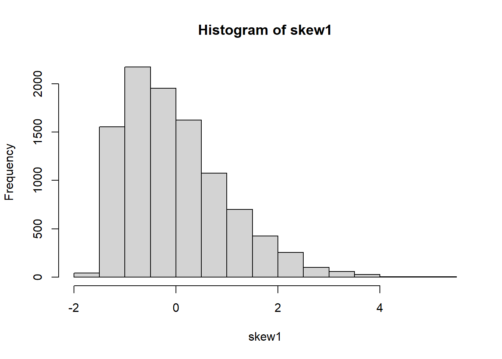
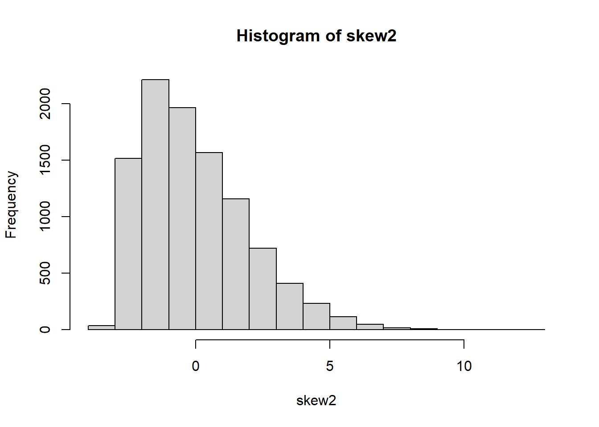

library(tidyverse) # Loads ggplot, dplyr, and several other packages.
library(flextable) # To make tables
library(fGarch) # To create skewed normal random valuesTest of type I error rates from the independent-sample t test through simulation
This paper examines, through simulations, how well the independent-sample t test approximates the desired Type I error specified in the test. The results for equal and unequal sample sizes and equal and unequal variances are examined, both for normal and skewed distributions.
In each of the situations examined, both samples come from the same population, so any p values less than the specified alpha value represent Type I errors (often called false-change errors in a monitoring context).
Bradley (1978) provided a quantified measure of robustness. His criterion for a “neglible” departure of the realized type I error rate from the desired alpha was that it should fall within the interval 0.9*alpha to 1.1*alpha, meaning that for a desired alpha of 0.05, the realized type I error rate should be inside the interval 0.045 to 0.055. For a desired alpha of 0.10, the realized type I error rate should be inside the interval 0.09 to 0.11. His “liberal” criterion for robustness specified that the realized Type 1 error rate should fall within the interval 0.5*alpha to 1.5*alpha. So if the specified alpha is 0.05, then the realized Type 1 error rate should be inside the interval 0.025 to 0.075. If the specified alpha is 0.10, then the realized Type I error rate should fall within the interval 0.05 to 0.15. We will look only at alpha = 0.05 here, but you can change the alpha level in the code below to examine what would happen with different alpha values.
Load needed packages:
Let’s examine 24 different several sampling scenarios. We’ll first use the standard normal distribution, which has a mean of 0 and a standard deviation of 1 and then alter the sample size and increase the standard deviation of one or both of the samples to 2. Later below we’ll use a right-skewed normal distribution with a mean of 0 and standard deviations of 1 or 2.
We’ll also run t tests using both var.equal = FALSE, which runs a t test assuming unequal variance (also called a Welch t test), and var.equal = TRUE, which runs a t test assuming equal variance.
In each of these scenarios both samples have the same mean, so we’re essentially assuming that the two samples come from a population with a mean of zero; thus we’re examining the null distribution for a population with a mean of zero. This means that when we run a t test on these samples and set the desired alpha to 0.05, just by chance about 5% of the p values should fall below 0.05. These are type I errors.
We’ll set the number of simulations to 5000 for each comparison, but this can be changed in the code below.
Note that I am not setting a random number seed for these simulations, so if you run the simulations you will get somewhat different results.
The following combinations of n1 size, n2 size, and sample standard deviations (s1 and s2) are run (means are 0 in all cases):
| n1 | n2 | s1 | s1 |
|---|---|---|---|
| 10 | 10 | 1 | 1 |
| 10 | 10 | 1 | 2 |
| 10 | 10 | 2 | 2 |
| 10 | 20 | 1 | 1 |
| 20 | 10 | 1 | 1 |
| 10 | 20 | 1 | 2 |
| 20 | 10 | 1 | 2 |
| 30 | 30 | 1 | 1 |
| 30 | 30 | 1 | 2 |
| 30 | 30 | 2 | 2 |
| 30 | 30 | 2 | 1 |
| 30 | 50 | 1 | 1 |
| 50 | 30 | 1 | 1 |
| 30 | 50 | 1 | 2 |
| 50 | 30 | 1 | 2 |
| 50 | 50 | 1 | 1 |
| 50 | 50 | 1 | 2 |
| 50 | 50 | 2 | 1 |
| 100 | 100 | 1 | 1 |
| 100 | 100 | 1 | 2 |
| 100 | 100 | 2 | 1 |
| 100 | 50 | 1 | 1 |
| 100 | 50 | 1 | 2 |
| 50 | 100 | 1 | 2 |
Set the number of simulations to run.
nreps = 5000Set the alpha level
alpha.p = 0.05t tests on samples from normal populations
Create a data frame with combinations of sample sizes and standard deviations for the two samples, n1 and n2. Standard deviations for each sample are specified in columns s1 and s2. Add columns p.t.var.equal and p.t.var.unequal and fill with NA. The mean type I error values for these columns will be filled in by the pmap_dbl() functions run below.
combos = data.frame(n1 = c(10, 10, 10, 10, 20, 10, 20, 30,
30, 30, 30, 30, 50, 30, 50, 50,
50, 50, 100, 100, 100, 100,
100, 50),
n2 = c(10, 10, 10, 20, 10, 20, 10, 30,
30, 30, 30, 50, 30, 50, 30, 50,
50, 50, 100, 100, 100, 50, 50, 100),
s1 = c(1, 1, 2, 1, 1, 1, 1, 1, 1, 2, 2,
1, 1, 1, 1, 1, 1, 2, 1, 1, 2, 1,
1, 1),
s2 = c(1, 2, 2, 1, 1, 2, 2, 1, 2, 2, 1,
1, 1, 2, 2, 1, 2, 1, 1, 2, 1, 1,
2, 2),
p.t.var.equal = rep(NA, 24),
p.t.var.unequal = rep(NA, 24))
combos2 = combos # Create a second combos df for later analysis on skewed data. The pmap_dbl() function (from the purrr package) takes the sample sizes (n1 and n2) and standard deviations (s1 and s2) in each row of the combos data frame created above, draws two random samples from the same populations, performs a t test on each pair of samples and records the p value for the test. For each pair of sample sizes and standard deviations, it conducts nreps numbers of t tests and returns the mean proportion of times the p values fell below the alpha level specified (0.05 as entered above). This is the empirical type I error rate for each of the 24 sampling scenarios.
In order to apply pmap_dbl() to our data we must first create a list of the four variables (n1, n2, s1, and s2) of the combos dataframe and assign it to the argument, .l. We then create an anonymous function (using “(….)” and apply the function that will calculate the mean p values for the number of replications. We then save these mean p values into the appropriate variables of combos (either p.t.var.equal or p.t.var. unequal).
combos$p.t.var.equal <- pmap_dbl(
.l = list(
combos$n1,
combos$n2,
combos$s1,
combos$s2
),
\(n1, n2, s1, s2) mean(replicate(nreps, t.test(rnorm(n1, mean = 0, sd = s1), rnorm(n2, mean = 0, sd = s2), var.equal = TRUE)$p.value) < 0.05)
)
combos$p.t.var.unequal <- pmap_dbl(
.l = list(
combos$n1,
combos$n2,
combos$s1,
combos$s2
),
\(n1, n2, s1, s2) mean(replicate(nreps, t.test(rnorm(n1, mean = 0, sd = s1), rnorm(n2, mean = 0, sd = s2), var.equal = FALSE)$p.value) < 0.05)
)Put the results in a table.
ft1 = flextable(combos)
ft1 = set_caption(ft1,
caption = paste0("Empirical type I error rates from ", nreps, " simulations of independent-sample t tests on samples from a normal population with a mean of 0 and equal or unequal standard deviations with various equal or unequal sample sizes. The target alpha value is ", alpha.p," and t tests were run assuming equal or unequal variance. ")) |>
set_header_labels(ft1, p.t.var.equal = "Type I error from equal variance t test", p.t.var.unequal = "Type I error from unequal variance t test")
ft1 n1 | n2 | s1 | s2 | Type I error from equal variance t test | Type I error from unequal variance t test |
|---|---|---|---|---|---|
10 | 10 | 1 | 1 | 0.0478 | 0.0484 |
10 | 10 | 1 | 2 | 0.0544 | 0.0504 |
10 | 10 | 2 | 2 | 0.0468 | 0.0484 |
10 | 20 | 1 | 1 | 0.0484 | 0.0530 |
20 | 10 | 1 | 1 | 0.0532 | 0.0484 |
10 | 20 | 1 | 2 | 0.0172 | 0.0540 |
20 | 10 | 1 | 2 | 0.1132 | 0.0508 |
30 | 30 | 1 | 1 | 0.0548 | 0.0472 |
30 | 30 | 1 | 2 | 0.0542 | 0.0514 |
30 | 30 | 2 | 2 | 0.0488 | 0.0510 |
30 | 30 | 2 | 1 | 0.0506 | 0.0548 |
30 | 50 | 1 | 1 | 0.0486 | 0.0508 |
50 | 30 | 1 | 1 | 0.0560 | 0.0496 |
30 | 50 | 1 | 2 | 0.0248 | 0.0528 |
50 | 30 | 1 | 2 | 0.0994 | 0.0488 |
50 | 50 | 1 | 1 | 0.0496 | 0.0480 |
50 | 50 | 1 | 2 | 0.0512 | 0.0492 |
50 | 50 | 2 | 1 | 0.0490 | 0.0484 |
100 | 100 | 1 | 1 | 0.0492 | 0.0496 |
100 | 100 | 1 | 2 | 0.0512 | 0.0526 |
100 | 100 | 2 | 1 | 0.0498 | 0.0484 |
100 | 50 | 1 | 1 | 0.0494 | 0.0584 |
100 | 50 | 1 | 2 | 0.1138 | 0.0538 |
50 | 100 | 1 | 2 | 0.0176 | 0.0492 |
When sample sizes and variances (standard deviations) are the same, the type I error rates from the equal variance t test are about the same as those from the unequal variance t test and both are close to the desired alpha of 0.05. When sample sizes are different but variances are equal, the same is true. When sample sizes are equal but variances are different, the type I error rates are still rather close to each other and to 0.05. But when both sample sizes and variances are different, the type I error rate from the equal variance test deviates considerably from 0.05. When the variance of the larger sample is greater than the variance of the smaller sample (as in row 6 of the table), the type I error rate of the equal variance test is too far below the target alpha. When the variance of the smaller sample is greater than the variance of the larger sample (e.g., row 7), the type I error rate from the equal variance test is much too high. The type I error rate for the unequal variance t test remains close to 0.05 for all cases. The lesson here is to always use the unequal variance t test.
t tests on samples from right-skewed normal population
Now we’ll do the same analysis except the samples come from a right-skewed normal population. The mean is still zero and the standard deviation is either 1 or 2. But now there’s a skewness value that skews the population to the right. Here are examples of populations with this skew, one with a standard deviation of 1 and the other with a standard deviation of 2.
skew1 = rsnorm(10000, mean = 0, sd = 1, xi = 3)
skew2 = rsnorm(10000, mean = 0, sd = 2, xi = 3)
hist(skew1)
hist(skew2)
combos2$p.t.var.equal <- pmap_dbl(
.l = list(
combos2$n1,
combos2$n2,
combos2$s1,
combos2$s2
),
\(n1, n2, s1, s2) mean(replicate(nreps, t.test(rsnorm(n1, mean = 0, sd = s1, xi =3), rsnorm(n2, mean = 0, sd = s2, xi =3), var.equal = TRUE)$p.value) < 0.05)
)
combos2$p.t.var.unequal <- pmap_dbl(
.l = list(
combos2$n1,
combos2$n2,
combos2$s1,
combos2$s2
),
\(n1, n2, s1, s2) mean(replicate(nreps, t.test(rsnorm(n1, mean = 0, sd = s1, xi =3), rsnorm(n2, mean = 0, sd = s2, xi =3), var.equal = FALSE)$p.value) < 0.05)
)Put the results in a table.
ft2 = flextable(combos2)
ft2 = set_caption(ft2,
caption = paste0("Empirical type I error rates from ", nreps, " simulations of independent-sample t tests on samples from a right-skewed normal population with a mean of 0 and equal or unequal standard deviations with various equal or unequal sample sizes. The target alpha value is ", alpha.p," and t tests were run assuming equal or unequal variance. ")) |>
set_header_labels(ft1, p.t.var.equal = "Type I error from equal variance t test", p.t.var.unequal = "Type I error from unequal variance t test")
ft2 n1 | n2 | s1 | s2 | Type I error from equal variance t test | Type I error from unequal variance t test |
|---|---|---|---|---|---|
10 | 10 | 1 | 1 | 0.0510 | 0.0484 |
10 | 10 | 1 | 2 | 0.0606 | 0.0588 |
10 | 10 | 2 | 2 | 0.0518 | 0.0416 |
10 | 20 | 1 | 1 | 0.0466 | 0.0484 |
20 | 10 | 1 | 1 | 0.0460 | 0.0524 |
10 | 20 | 1 | 2 | 0.0240 | 0.0466 |
20 | 10 | 1 | 2 | 0.1178 | 0.0664 |
30 | 30 | 1 | 1 | 0.0474 | 0.0510 |
30 | 30 | 1 | 2 | 0.0546 | 0.0534 |
30 | 30 | 2 | 2 | 0.0492 | 0.0504 |
30 | 30 | 2 | 1 | 0.0510 | 0.0500 |
30 | 50 | 1 | 1 | 0.0472 | 0.0502 |
50 | 30 | 1 | 1 | 0.0484 | 0.0538 |
30 | 50 | 1 | 2 | 0.0274 | 0.0542 |
50 | 30 | 1 | 2 | 0.0930 | 0.0520 |
50 | 50 | 1 | 1 | 0.0494 | 0.0480 |
50 | 50 | 1 | 2 | 0.0548 | 0.0500 |
50 | 50 | 2 | 1 | 0.0568 | 0.0532 |
100 | 100 | 1 | 1 | 0.0472 | 0.0460 |
100 | 100 | 1 | 2 | 0.0544 | 0.0484 |
100 | 100 | 2 | 1 | 0.0558 | 0.0446 |
100 | 50 | 1 | 1 | 0.0536 | 0.0546 |
100 | 50 | 1 | 2 | 0.1166 | 0.0560 |
50 | 100 | 1 | 2 | 0.0192 | 0.0552 |
The unequal variance t test performs well with these skewed normal distributions regardless of unequal sample sizes and variance. The equal variance t test has the same problems as for the normal distribution: poor type I error rates, which are too low when the variance of the larger sample is greater and too high when the variance of the smaller sample is greater.
References
Bradley, James V. 1978. “Robustness?” British Journal of Mathematical and Statistical Psychology 31 (2): 144–52. https://doi.org/10.1111/j.2044-8317.1978.tb00581.x.